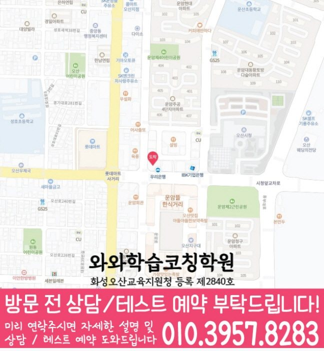

30초 핵심 안내
부산동 수학학원 선택 전 확인할 기준
부산동 수학학원은 초·중·고 학생의 수학 시작점, 학교 과제, 오답과 복습 기록을 함께 보는 지역 안내입니다. 풀이 과정과 계산 오류의 구분을 상담 기준으로 삼고, 경기 오산시 성호대로 121 월드타워 505호의 제공 센터 정보와 학교 자료만 사용했습니다.
Math Learning Guide
부산동 수학학원 선택 전 초·중·고 학생의 학교 진도, 수학 상태, 주간 수학 학습량과 점검 일정, 통학과 상담 기준을 확인하세요.
30초 핵심 안내
부산동 수학학원은 초·중·고 학생의 수학 시작점, 학교 과제, 오답과 복습 기록을 함께 보는 지역 안내입니다. 풀이 과정과 계산 오류의 구분을 상담 기준으로 삼고, 경기 오산시 성호대로 121 월드타워 505호의 제공 센터 정보와 학교 자료만 사용했습니다.
수업 안내 이미지

센터 위치 안내

경기 오산시 부산동에서 수학학원을 찾는다면 처음 상담에서 가장 필요한 답은 막연한 평가가 아니라 자녀의 오류 유형을 어떤 순서로 점검할지에 관한 설명입니다. ‘자기주도학습’은 프로그램명으로 해석하지 않고 학생의 계획·시작·도움 요청·점검 행동을 살필 질문으로 바꿉니다. 부산동 안내 주소는 ‘경기 오산시 성호대로 121 월드타워 505호’입니다. 부산동에서 방문을 준비할 때 안내된 주소만으로 실제 이동 거리와 출입 방식을 판단하기 어려우므로 방문 전에는 따로 점검하는 편이 좋습니다. 질문 목록을 정리하며, 부산동에서 영어와 수학에 관한 상담을 함께 준비하더라도 과목별 대상과 학습 절차는 각각 확인하세요. 설명을 위해 ‘과제를 정리할 때, 수량 사이의 관계를 말로 설명하지 못하고 식만 적는 학생’이라는 가상 고민 유형을 정했습니다. 여기서, 본문에서는 구할 것과 주어진 수량의 관계를 식으로 옮기는 과정에서 보이는 행동을 기준으로 학습 방향과 선택 항목을 단계별로 정리합니다.
부산동 수학학원 상담은 학생의 현재 교재와 최근 오답을 확인한 뒤 현실적인 통원 일정까지 맞추는 과정입니다. 경기 오산시 부산동의 제공 센터 주소는 경기 오산시 성호대로 121 월드타워 505호입니다. 수학 가능 학년은 초1·초2·초3·초4·초5·초6·중1·중2·중3·고1·고2·고3입니다.
운천초·성호초·운산초·운암중·운천중·성호중·운암고·운천고는 부산동 센터 자료에 포함된 학교 참고 정보입니다. 같은 학교 학생이라도 취약 단원과 공부 시간이 다르므로 학교명만으로 수업 방식을 정하지 않고 개별 자료를 바탕으로 상담합니다.
와와학습코칭센터 오산점의 제공 자료에는 화성오산교육지원청 등록 제2840호가 표시되어 있습니다. 부산동 학부모는 이 정보와 교습비 자료를 확인한 뒤 수업 시간뿐 아니라 과제 확인과 재학습 방식까지 질문하는 편이 좋습니다.
문장제에서 구할 것과 핵심 수량을 구분하는 데 겪는 어려움에 관한 상담은 진도보다 확인 방법을 묻는 쪽이 분명합니다. 먼저 학생이 구할 것과 주어진 수량을 구분하는 장면에서 한 말이나 표시를 그대로 남기고 해석은 보류합니다. 부산동에서 문장제의 수량 관계에 관한 상담 질문을 정리할 때, 이어서 부산동에서 그 기록을 어떤 단계에서 살피며 오답 확인으로 어떻게 이어 가는지 질문합니다. 우선, 부산동 상담 메모에서는 학생 상태에 관한 설명과 실제 운영 답변을 구분해 기록한 뒤 비교하세요.
여기서, 오답 원인을 곧바로 개념 부족으로 정하지 않습니다. 구할 것과 주어진 수량을 구분하는 장면에서 학생이 알고 있던 내용, 놓친 조건, 선택한 순서, 계산 결과를 각각 표시해 봅니다. 특히, 정답인 풀이에도 같은 질문을 적용하면 우연한 선택과 이해한 풀이를 구별하는 데 도움이 됩니다. 여기서, 분류가 애매한 부분은 부산동 상담에서 사용할 자료와 확인 절차를 물어봅니다.
부산동에서 문장제의 수량 관계에 관한 문의 내용을 정리할 때, 상담 메모에서 지역, 학교, 주소는 각각 다른 역할을 합니다. 부산동에서 ‘자기주도학습’ 관련 사실과 확인 전 정보를 나눌 때, 지역은 ‘경기 오산시 부산동’ 범위로만 표현하고 주소는 방문 위치 확인에만 사용합니다. 학교 표기 ‘운천초’는 부산동 상담 범위를 구체화하는 참고 정보이며, 특정 학생이 이 학원을 다닌다는 의미로 확대확정해서는 안 됩니다. 직접 확인하기 전에는, 통학 편의나 주변 환경은 이 정보들에서 추정하지 않는 편이 좋습니다.
‘자기주도학습’ 관련 설명은 특정 프로그램이 있다고 전제하지 않고 학생이 계획을 세우고 시작하는 행동을 어떻게 살피는지 묻는 항목으로 다룹니다. 부산동 문의 과정에서 문제 선택, 도움 요청, 중간 점검, 마무리 기록 가운데 학생이 혼자 할 수 있는 부분과 안내가 필요한 부분을 구분해 물어봅니다. ‘과제를 정리할 때, 수량 사이의 관계를 말로 설명하지 못하고 식만 적는 학생’ 고민에 관한 학습 질문과 구분해, 한 번 보인 적극적인 모습만으로 판단하지 말고 같은 기준으로 관찰할 시점과 기록 방법이 있는지도 확인할 수 있습니다. ‘자기주도학습’이라는 표현만으로 자율적인 습관이나 학습 결과가 생긴다고 단정하지 않습니다.
현재 상태를 점검하며, 여러 취약점을 한 번에 다루기보다 문장제에서 구할 것과 핵심 수량을 구분하는 데 겪는 어려움과 직접 연결된 문항부터 고릅니다. 그 과정에서, 학습자의 현재 풀이를 기준점으로 남기고, 필요한 설명과 짧은 연습을 거쳐 같은 문제를 다시 풀어 봅니다. 그 뒤 문장 순서나 숫자가 달라져도 구할 것과 수량 관계를 먼저 정리하는지 확인해야 적용 여부를 판단 근거로 삼을 수 있습니다. 덧붙여, 설명을 들을 때는 단계마다 사용하는 자료와 피드백 방식을 따로 기록합니다.
구체적으로, 과제가 제공된다고 전제하지 않고, 있다면 완료 기준과 미완료 때의 확인 절차부터 물어봅니다. 이어서 오답 이유, 다시 볼 날짜, 구할 것과 주어진 수량의 관계를 식으로 옮기는 과정 관련 피드백이 어떻게 연결되는지 확인합니다. 아울러, 보호자 안내가 있다면 내용과 시점도 추가 질문으로 둡니다. 자기주도학습 관련 설명은 이 학습 관리 절차의 존재를 입증하지 않습니다.
답변을 비교하기 전에, 상담 메모은 ‘확인됨·조건 있음·추가 질문’ 세 칸으로 나누어 적을 수 있습니다. 특히, 학생 상태 확인, 독립 풀이 기회, 오답 재점검, 피드백 기록 가운데 문장제의 수량 관계에 필요한 항목을 먼저 둡니다. 다음 단계를 정하기 전에, 듣지 않은 수업 방식은 빈칸으로 남기고 대상과 조건이 붙은 답은 그대로 기록합니다. 특히, 다른 학원을 낮추지 않고 이 학생의 필수 조건이 충족되는지만 비교하세요.
Information Basis
센터명·주소·등록번호·학교 참고 목록은 제공 자료 범위에서 확인했습니다. 실제 수업 가능 학년과 과목, 시간표는 상담 시점에 다시 확인해야 합니다.
FAQ
아울러, 부산동 페이지에 안내된 주소를 먼저 대조한 뒤 실제 이동 경로, 소요 시간, 건물 출입 조건은 학부모가 직접 살펴보세요. 위치 표기만으로 통학 편의나 주변 환경을 미리 판단하지 않는 것이 안전합니다.
문장 순서나 숫자가 달라져도 구할 것과 수량 관계를 먼저 정리하는지 확인할 수 있습니다. 운영 여부를 단정하지 않으려면, 정답보다 선택 이유와 달라진 조건을 어떻게 반영했는지 기록하고, 수업에서는 이런 적용을 어떤 자료로 재점검하는지 물어보세요.
덧붙여, 이 페이지에서 과제 유무와 방식을 바로 판단할 수 없습니다. 과제가 있다면 완료 표시뿐 아니라 구할 것과 주어진 수량의 관계를 식으로 옮기는 과정에서 막힌 위치, 다시 풀 시점, 미완료 때의 확인 절차가 어떻게 되는지 설명을 요청하세요.
‘자기주도학습’은 학생 행동을 살필 질문으로만 사용하며 특정 프로그램이나 변화가 있다고 전제하지 않습니다. ‘자기주도학습’을 알아볼 때 학생이 계획을 세우고 시작하는 행동, 문제 선택과 도움 요청, 중간 점검과 마무리 기록을 어떤 자료와 시점으로 관찰하는지 물어보세요.
Parent Perspective
※ 부산동 학부모가 상담에서 확인할 상황을 재구성한 예시이며, 실제 수강 후기나 특정 성적 결과가 아닙니다.
다음 내용은 학습 고민을 설명하기 위한 가상 예시입니다. 설명에 사용할 가상 고민은 ‘과제를 정리할 때, 수량 사이의 관계를 말로 설명하지 못하고 식만 적는 학생’입니다. 부산동 문의 과정에서 이 가상 유형을 설명하기 위해 학부모는 자녀가 구할 것에 밑줄을 긋고 핵심 수량과 단위를 표시한 문제, 처음 만든 식을 함께 준비합니다. 아울러, 부산동 상담용 메모에는 과제를 시작하고 마무리한 시각과 도움을 요청한 지점도 함께 적습니다. 학습자가 구할 것과 주어진 수량의 관계를 식으로 옮기는 과정에서 막힌 지점을 전달한 뒤, 설명을 들을 때 문장제의 핵심 수량을 구분하는 방법과 수량 관계를 식으로 옮겼다고 볼 기준을 물어봅니다. 부산동 문의 과정에서는 추가로 과제 정리 과정에서 스스로 한 일과 안내가 필요했던 일을 어떻게 구분하는지도 확인합니다. ‘자기주도학습’에 관해서는 학생의 계획 수립과 시작, 문제 선택, 도움 요청, 자기 점검 행동을 어떤 자료와 시점으로 살피는지도 함께 묻습니다. 자기주도학습은 프로그램의 운영 사실이 아니라 학생 행동을 살필 관점으로만 메모합니다. 사실과 추정을 나눌 때, 부산동에서 무엇을 물을지 정리한 예시일 뿐 실제 자녀의 결과나 만족도를 나타내지 않습니다.